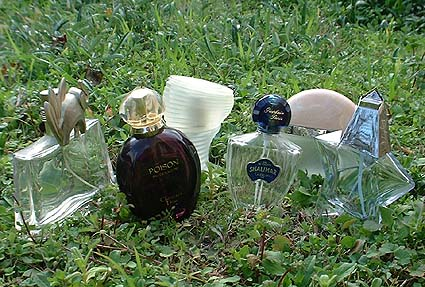

Familias olfativas
Las principales familias de perfumes son:
- Cítricos: Aromas frescos y chispeantes con notas de limón, bergamota y naranja. Ideales para el uso diario.
- Florales: Elaborados con rosa, jazmín o azahar. Aportan romanticismo, elegancia y suavidad.
- Amaderados: Formulados con cedro, sándalo y vetiver. Tienen gran fijación y carácter cálido.
- Orientales: Mezcla de vainilla, ámbar y especias. Aromas cálidos, intensos y seductores.
Galería ilustrativa
